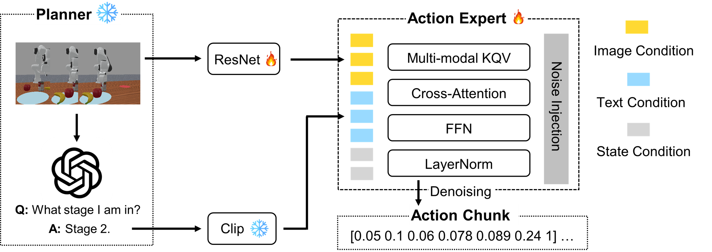
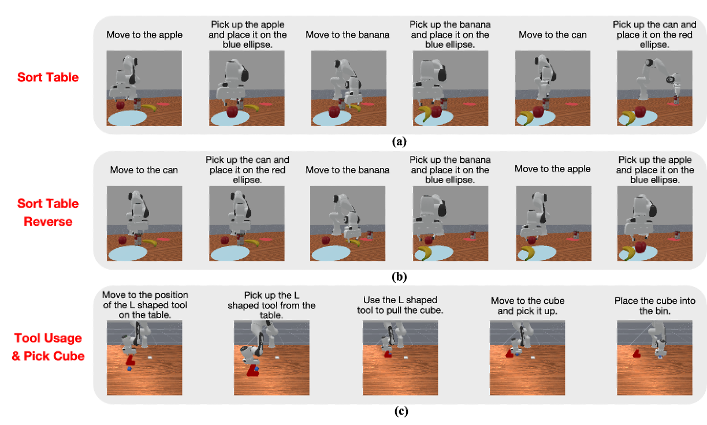
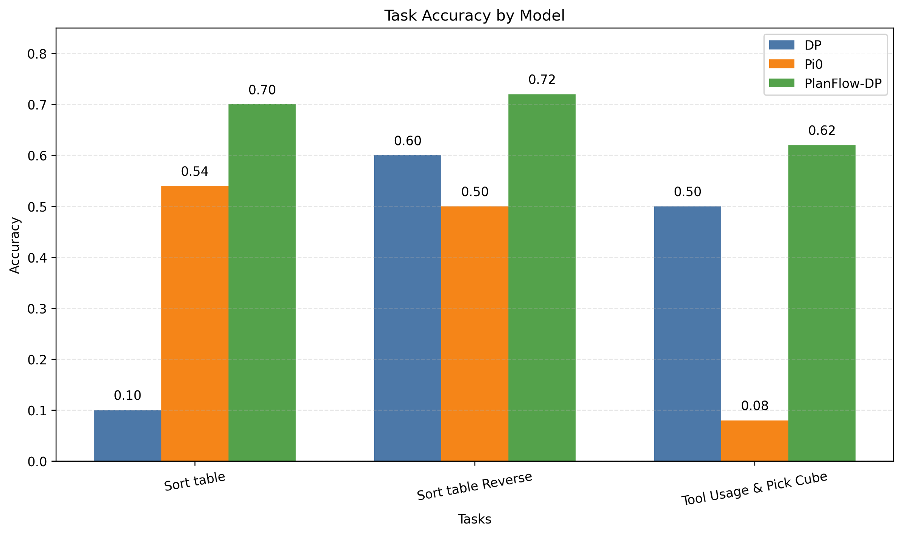

Sort Table
Sort Table Reverse
Tool Usage & Pick Cube
Long-horizon robotic manipulation remains challenging because policies must generate accurate low-level actions while completing multiple sub-goals in the correct order. We propose PlanFlow-DP, a stage-aware language-conditioned diffusion policy that uses a pretrained multimodal large language model to infer the current task stage from visual observations and convert it into explicit language guidance for action conditioning. This stage-aware language signal is fused with visual features and robot state in a diffusion-based action predictor. In ManiSkill experiments on Sort Table, Sort Table Reverse, and Tool Usage and Pick Cube, PlanFlow-DP outperforms Diffusion Policy and pi_0, achieving better language following and stronger long-horizon reliability.
PlanFlow-DP adopts a hierarchical plan-then-act framework for long-horizon manipulation. A stage-aware planner (GPT-4o) first infers the current task stage from the RGB observation, global instruction, and predefined stage decomposition, then maps the predicted stage to a stage-level language instruction. This instruction is encoded together with visual history and robot state to form multimodal condition tokens for a stage-conditioned Diffusion Transformer (DiT) action expert. The DiT denoises future action chunks through self-attention on action tokens and cross-attention to condition tokens, enabling explicit stage reasoning and high-quality continuous control in a closed-loop receding-horizon pipeline.

We evaluate the proposed method on three ManiSkill-based long-horizon tasks: Sort Table, Sort Table Reverse, and Tool Usage & Pick Cube. These tasks require long-horizon planning, stage transition awareness, and precise low-level control under varying object layouts, which serve as strong benchmarks to test long-horizon manipulation ability.

Figure 3 shows qualitative comparisons on three different tasks. PlanFlow-DP consistently outperforms Diffusion Policy and π0, demonstrating stronger language following and improved long-horizon reliability.



Sort Table
Sort Table Reverse
Tool Usage & Pick Cube
Diffusion Policy
π0
PlanFlow-DP
PlanFlow-DP combines explicit LLM-based stage reasoning with diffusion-based action generation for long-horizon manipulation, achieving higher success than Diffusion Policy and π0 on Sort Table, Sort Table Reverse, and Tool Usage and Pick Cube. Key limitations include dependence on external stage prediction, predefined task decomposition, and simulation-only evaluation. Future work will improve planner reliability, generalization, and real-time deployment efficiency.
We would like to thank Prof. Xiaoxiao Du, Prof. Yulun Tian and GSIs for their inspiring lectures, helpful instruction, and support during the semester and throughout this project.
We thank all team members for their contributions to this project. Changhe Chen led the pipeline integration and end-to-end training of PlanFlow-DP. Chi Zhang contributed to data collection and the simulation environment setup. Pengchen Chen worked on baseline implementation and failure case analysis. Yifan Chou contributed to the literature review, experiments, and evaluation. We sincerely appreciate everyone's effort and collaboration throughout the development, experimentation, and presentation of this work.
@article{YourPaperKey2024,
title={Your Paper Title Here},
author={First Author and Second Author and Third Author},
journal={Conference/Journal Name},
year={2024},
url={https://your-domain.com/your-project-page}
}